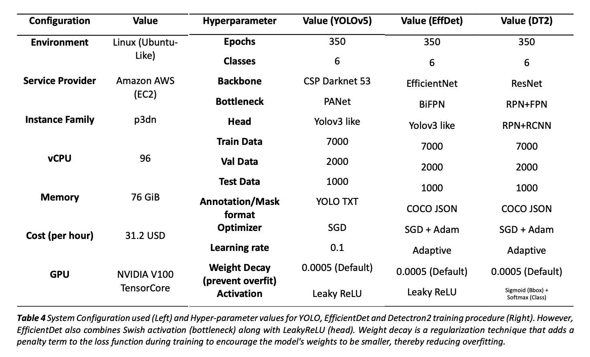
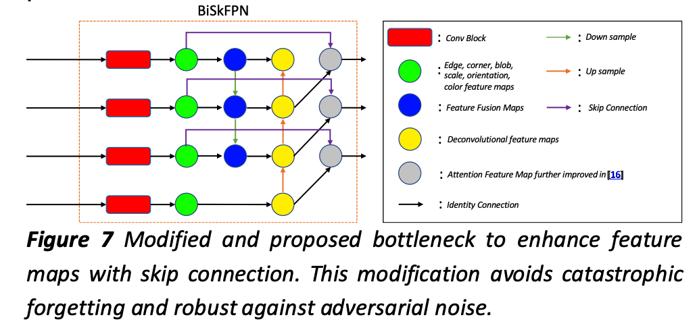
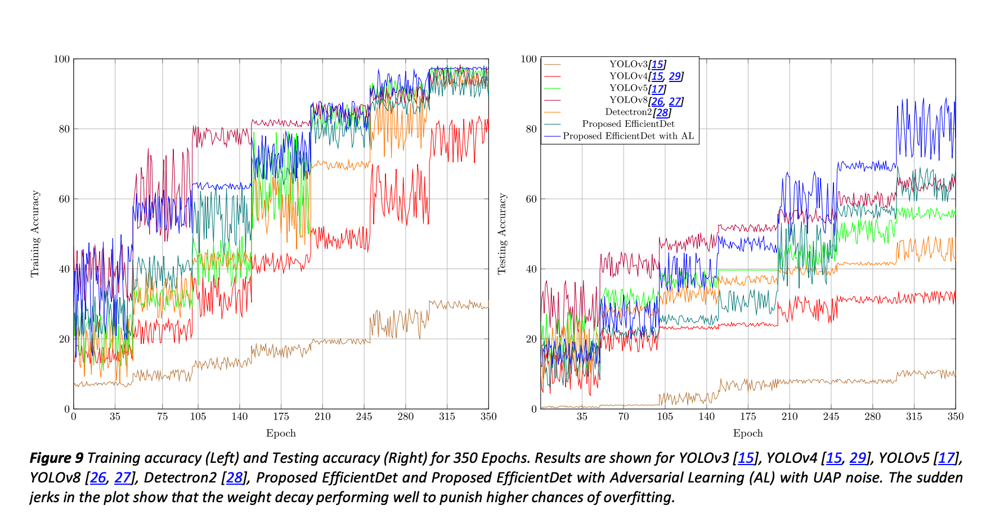
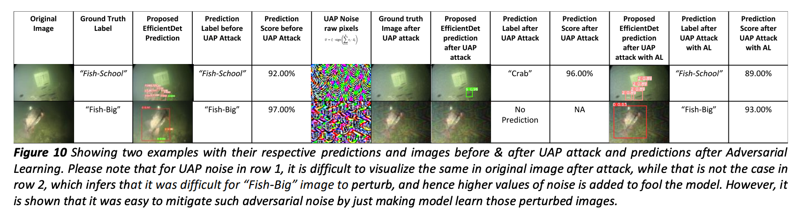
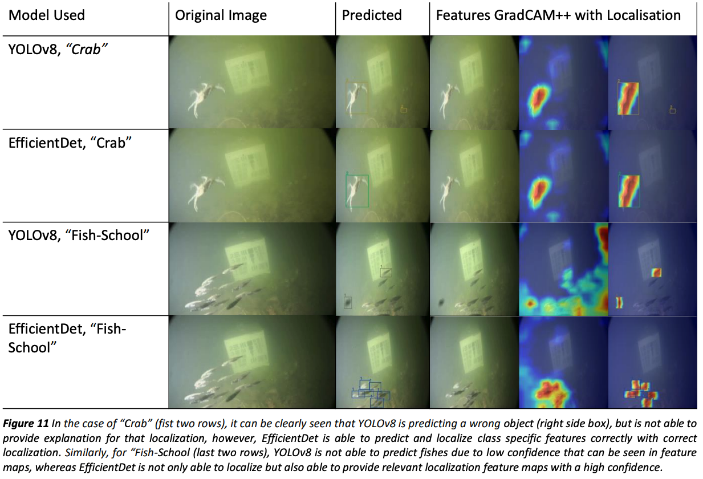

Abstract
Marine animals and deep underwater objects are difficult to recognize and monitor for safety of aquatic life. There is an increasing challenge when the water is saline with granular particles and impurities. In such natural adversarial environment, traditional approaches like CNN start to fail and are expensive to compute. This project involves implementing and evaluating various object detection models, including EfficientDet, YOLOv5, YOLOv8, and Detectron2, on an existing annotated underwater dataset, called the “Brackish-Dataset”. The dataset comprises annotated image sequences of fish, crabs, starfish, and other aquatic animals captured in Limfjorden water with limited visibility. The aim of this research project is to study the efficiency of newer models on the same dataset and contrast them with the previous results based on accuracy and inference time. Firstly, I compare the results of YOLOv3 (31.10% mean Average Precision (mAP)), YOLOv4 (83.72% mAP), YOLOv5 (97.6%), YOLOv8 (98.20%), EfficientDet (98.56% mAP) and Detectron2 (95.20% mAP) on the same dataset. Secondly, I provide a modified BiSkFPN mechanism (BiFPN neck with skip connections) to perform complex feature fusion in adversarial noise which makes modified EfficientDet robust to perturbations. Third, analyzed the effect on accuracy of EfficientDet (98.63% mAP) and YOLOv5 by adversarial learning (98.04% mAP). Last, I provide classactivation-map based explanations (CAM) for the two models to promote Explainability in black box models. Overall, the results indicate that modified EfficientDet achieved higher accuracy with five-fold cross validation than the other models with 88.54% IoU of feature maps.
Contributions
Contributions and state-of-the-art object detection models with techniques:
-
Comparative evaluation of state-of-the-art object detection models:
The project involves a comparative evaluation of various object detection models, including EfficientDet, YOLOv5, YOLOv8, and Detectron2, on an existing annotated underwater dataset. This evaluation helps to identify the most effective model for underwater object detection.
-
Development of a modified BiSkFPN mechanism:
The project proposes a modified BiSkFPN mechanism, which involves using a BiFPN neck with skip connections, to perform complex feature fusion in adversarial noise. This mechanism makes the modified EfficientDet model more robust to perturbations and improves its accuracy.
-
Adversarial learning for improved object detection accuracy:
The project analyzes the effect of adversarial learning on the accuracy of EfficientDet and YOLOv5. This analysis helps to identify the most effective training strategy for underwater object detection.
-
Explainability in black box models:
The project provides class-activation-map based explanations (CAM) for EfficientDet and YOLOv5 to promote explainability in black box models. These explanations help to improve the interpretability of the models and enhance their trustworthiness.
-
Improved performance in AMODMV:
The project demonstrates that modified EfficientDet achieved higher accuracy with five-fold cross-validation than other models. The use of EfficientDet improves the accuracy and reliability of AMODMV, which can enhance maritime security, monitor the environment, and protect aquatic life.
Requirements and Configuration used
Important Figures from the paper
A modified Bidirectional Skip-Connection FPN (BiSkFPN) bottleneck is proposed by modifying original BiFPN layer. BiSkFPN architecture is shown in Figure 7 which has an additional layer of Deconv feature maps and skip connections. On contrary to the previous research, that has used attention mechanism to preserve low-level features, I use Deconv feature maps which are less computationally expensive than attention mechanism and robust to perturbations.
A feature map is the output of a convolutional layer that highlights specific features in the input data. Each feature map contains a set of values that represent the presence or absence of a specific feature in the input. The purpose of the feature map is to extract high-level features from the input data that are relevant to the task at hand. Attention mechanisms are used to selectively focus on certain parts of the input data that are most relevant to the task at hand. An attention layer can be added between two convolutional blocks to learn feature weights based on the input data. Deconvolution or transposed convolution layers can be used to up-sample the feature maps and increase their spatial resolution. A deconvolution layer can be added between two convolutional blocks to recover lost spatial information.
Figure 9 shows train-test accuracy curves of different models used in the experiment to compare. The train and test accuracy curve is a plot of the accuracy of a model on the training and testing datasets over epochs, as the model is trained. Furthermore, by utilizing UAP adversarial noise as part of the adversarial learning approach in the training procedure of EfficientDet for the dataset, the proposed approach demonstrates significant improvements in both training and testing accuracy and loss, also depicted in Figure 9. UAP was utilized in object detection training procedure by adding small perturbations to the input image.
In addition, such noise is imperceptible to time-limited humans [30]. Therefor I provide an example in Figure 10 where the same ground truth image was tested for proposed EfficientDet model before and after UAP attack, along with the predictions from proposed EfficientDet with Adversarial Learning (AL).
Finally, the GradCAM++ tool (introduced in section 4.2.5) is utilized to understand the class-specific features for the proposed EfficientDet model and YOLOv8 shown in Figure 11. It is particularly useful for understanding how the model makes its decision, and which parts of the image are most important for that decision. Visualizing class-specific features using GradCAM++ is important because it can help us understand why a model is making a certain prediction, and whether it is focusing on the correct features. By visualizing the regions of an image that are most relevant for a specific class, we can gain insights into the model's decision-making process and potentially improve its accuracy. 